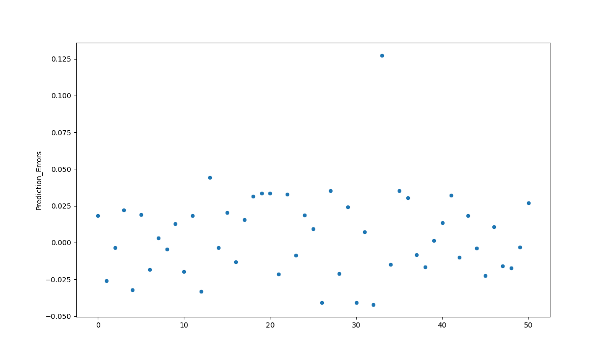

Index Models
Table of Contents
Traditional finance research has used the index model as a means to estimate the expected return on a stock. This expected return is then subtracted from the actual return to estimate an abnormal return. The index model for stock i is:
\[r_{it} = \alpha_i + \beta_i r_{mt} + e_t\]
where:
- \(r_{it}\) is the return on stock i at time t
- \(\alpha\) and \(\beta\) are estimated coefficients
- \(r_{mt}\) is the return on the market portfolio (S&P 500) at time t
- \(e_t\) is the error term
If we estimate \(\alpha_i\) and \(\beta_i\) over time interval \(t < t*\) then we can estimate the expected return on stock \(t\) over \(t > t*\) with (assuming we know the return on the market):
\[E(r_{it}) = \hat{\alpha}_i + \hat{\beta}_i r_{mt}\]
where the \(\hat{hat}\) denotes an estimated coefficient.
Here we'll compare the predictive ability of the index model relative to deep regressions in PyTorch and Tensorflow.
1. Data
We'll use daily data over the last year retrieved from Interactive Brokers API via the ibinsync Python package:
import pandas as pd import seaborn as sns #import matplotlib as plt import matplotlib.pyplot as plt import numpy as np import ib_insync as ib from ib_insync import * import time ib = IB() #util.startLoop() ## TWS is on 7496 ## Gateway on 4002 ib.connect('127.0.0.1', 4002, clientId=1) spy = Stock("SPY", "SMART", "USD") target_stock = Stock("XLE", "SMART", "USD") spy_data = ib.reqHistoricalData(spy, endDateTime='', durationStr='252 D', barSizeSetting='1 day', whatToShow='TRADES', useRTH=True, formatDate=1, keepUpToDate=False,chartOptions=None) spy_data = util.df(spy_data) spy_data["date"] = pd.to_datetime(spy_data["date"]) spy_data.set_index('date', inplace=True) spy_returns = spy_data['close'].pct_change()[1:] time.sleep(10) target_stock_data = ib.reqHistoricalData(target_stock, endDateTime='', durationStr='252 D', barSizeSetting='1 day', whatToShow='TRADES', useRTH=True, formatDate=1, keepUpToDate=False,chartOptions=None) target_stock_data = util.df(target_stock_data) target_stock_data["date"] = pd.to_datetime(target_stock_data["date"]) target_stock_data.set_index('date', inplace=True) target_stock_returns = target_stock_data['close'].pct_change()[1:] returns = pd.merge(spy_returns, target_stock_returns, on = 'date') returns.columns = ["spy", "target"]
1.1. Train vs Tests
Here we'll split the data set into training and test sets. It is important to estimate the parameters of a given model over a different period than the one in which you are testing the model.
from sklearn.model_selection import train_test_split train, test = train_test_split(returns, test_size = 0.2)
2. Index Model
To calculate the index mode we'll use SciKit Learn.
from sklearn.linear_model import LinearRegression reg = LinearRegression().fit(train.spy.values.reshape(-1,1), train.target.values.reshape(-1,1))
predictions = reg.predict(test.spy.values.reshape(-1,1)) errors = test.target.values.reshape(-1,1) - predictions
regression_errors = pd.DataFrame(errors.reshape(-1,1), columns=["Prediction_Errors"])
plt.clf() linear_reg_errors_plot = sns.scatterplot(data=regression_errors["Prediction_Errors"]) linear_reg_errors_plot.figure.savefig("linear_reg_errors_plot.png")

Calculate the mean-squared errors.
regression_errors.std()
Prediction_Errors 0.018801 dtype: float64
3. Pytorch
Pytorch is a machine learning and deep neural network framework from Facebook research. It is similar to the numpy framework, but with GPU acceleration. Pytorch is more flexible compared to Tensorflow (below), but usually requires more code.
import torch import torch.nn as nn import torch.nn.functional as F from torch.utils.data import DataLoader batch_size = 5 train_dl = DataLoader(train, batch_size, shuffle=False) spy_torch = torch.Tensor([[x] for x in list(train.spy)]) target_torch = torch.Tensor([[x] for x in list(train.target)])
The index model regression is simple, and so we'll create a similarly simply neural network below by subclassing the torch.nn.Module.
# define a network class Net(torch.nn.Module): def __init__(self, n_feature, n_hidden, n_output): super(Net, self).__init__() self.hidden = torch.nn.Linear(n_feature, n_hidden) self.predict = torch.nn.Linear(n_hidden, n_output) def forward(self, x): x = F.relu(self.hidden(x)) x = self.predict(x) return x net = Net(n_feature=1, n_hidden=100, n_output=1) optimizer = torch.optim.SGD(net.parameters(), lr=0.2) loss_func = torch.nn.MSELoss() # mean squared error loss
# train the network x = spy_torch y = target_torch for t in range(500): prediction = net(x) # input the market returns and predict loss = loss_func(prediction, y) optimizer.zero_grad() # zero out gradients loss.backward() # backprop, compute gradients optimizer.step()
## Prediction Errors spy_test_torch = torch.Tensor([[x] for x in list(test.spy)]) target_test_torch = torch.Tensor([[x] for x in list(test.target)]) preds_torch = net(spy_test_torch) error_torch = preds_torch - target_test_torch
Calculate mean-squared error.
error_torch.std()
tensor(0.0254, grad_fn=<StdBackward0>)
And the results are slightly worse.
4. Keras/Tensorflow
import tensorflow as tf from tensorflow import keras from tensorflow.keras import layers from tensorflow.keras.layers.experimental import preprocessing
index_model = tf.keras.Sequential([
layers.Dense(units=1)
])
index_model.compile( optimizer=tf.optimizers.Adam(learning_rate=0.1), loss='mean_absolute_error')
None
history = index_model.fit( train.spy, train.target, epochs=100, verbose=0, # Calculate validation results on some percent of the training data validation_split = 0.2)
test_results = {} test_results['index_model'] = index_model.evaluate( test.spy, test.target, verbose=0)
Calculate predictions in the test data set.
tensorflow_predictions = index_model.predict(test.spy) error_tensorflow = tensorflow_predictions - test.target.values error_tensorflow.std()
0.03595855441787083
Which is slightly more than the mean-squared error for the Pytorch network.
5. Conclusion
Arguably, we could improve these neural networks and lower their prediction errors (feel free to do this as a bonus exercise). That said, it seems that a simple linear equation (as in the regression) explains the relationship between the stock and market returns well. Remember, deep neural networks are powerful because they can approximate any arbitrary (unknown) functional relationship. But if we know the appropriate relationship, then neural nets lose their edge.